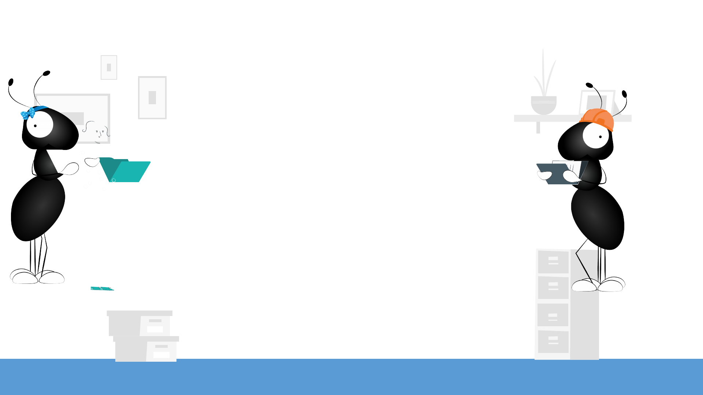

INTRO STORY (OPTIONAL)
Reasons why stories are important:
• It helps to start the presentation in a
positive note. The client and every other
person attending the meeting has a
change of mood according to the
presenter’s intent.
• It helps the attendees to forget about
what they were thinking before, and
makes them focus on the rest of the pitch
(if the story is good enough)